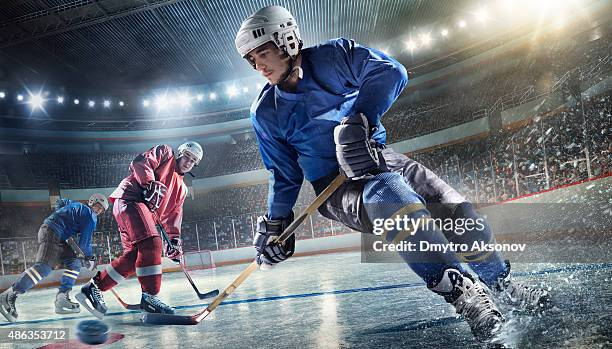

Hóquei

O hóquei, em suas variações (campo e gelo), é praticado há séculos, com o formato moderno se desenvolvendo no século XIX. O hóquei no gelo é extremamente popular em países como Canadá, Rússia e Suécia, enquanto o hóquei de campo domina na Índia e no Paquistão. Cerca de 3 milhões de pessoas praticam hóquei no gelo, e o hóquei de campo possui mais de 2 bilhões de fãs, tornando-se um esporte culturalmente significativo.